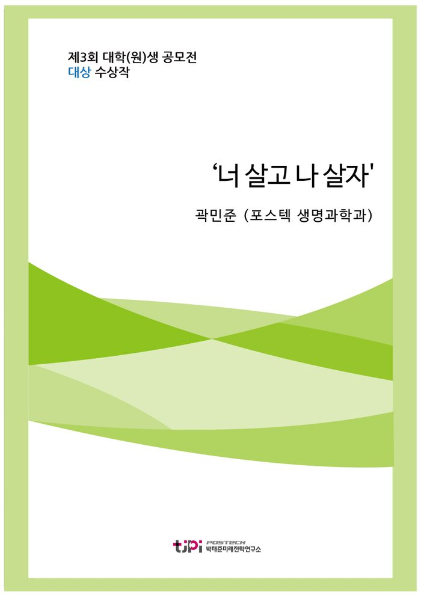

저자 곽민준 (포스텍 생명과학과)보도일 2016.07.20

요 약
[에세이 대상 수상작]
도대체 왜 한국인들은 다른 사람들과의 관계에서 부정적인 감정을 느끼게 되는 것일까? 그 이유는 한국사회를 가장 잘 나타내는 단어 중 하나인 ‘경쟁’ 에서 찾을 수 있다.
한국 사회가 행복하지 않은 이유가 사람들이 사회적으로 성공을 거둔 자들과 비교하고, 비교당하기 때문이라면 행복한 사회로 가기 위한 해결책은 비교하지 않는 사회에서 찾을 수 있을 것이다.
그렇다면 비교하는 사회에서 발생한 문제들을 해결할 수 있는 방안은 없는 것일까? 그렇지 않다.
비교하지 않는 사회를 만드는 것이 불가능하다면 비교가 필요 없는 사회를 만들면 된다. 즉, 지금 우리에게는 전문성이 인정받는 사회, 그리고 다양성이 존재하는 사회가 필요하며 이를 위해서 대대적인 교육 개혁이 필요하다.
목 차
행복이란
한국인의 행복
비교하는 사회
비교하지 않는 사회? 비교가 필요 없는 사회!
멀티 플레이어보다 스페셜리스트
전문성이 인정받는 사회
다양성이 존재하는 사회
비교가 필요 없는 사회로 가는 길
마치면서
내 용
[2016 청년 에세이 대상] ‘너 살고 나 살자'
곽민준 (포스텍 생명과학과)
행복이란
2년 전 한창 대학입시를 준비하느라 바쁜 시기였다. 대부분의 학생들이 학생부 전형으로 진학하는 과학고의 성격상 선생님들께서는 많은 추천서를 쓰느라 바쁘고 정신이 없으셨다. 특히 학생들에게 인기가 많았던 당시 담임선생님께서는 무려 100장이 넘는 추천서를 부탁 받기도 하셨다. 너무 많은 양이다 보니 거절할 만도 하셨지만 선생님께서는 학생들의 추천서 부탁을 모두 받아들이셨고, 일주일 동안 댁에 가시지 못하고 교무실에서 밤을 새며 모든 추천서를 완성하셨다. 하지만 너무 무리하셨는지 이후 며칠 동안 몸 상태가 안 좋아 보이셨고, 결국 병가를 내고 병원에 다녀오셨다. 선생님께서는 걱정하는 우리들에게 ‘다 내가 좋아서 하는 일이다. 나는 이렇게 너희들을 위해 일할 때가 제일 “행복” 하다.’고 이야기하시며 걱정하지 말라고 하셨고, 선생님의 노력덕분인지 나와 친구들은 대부분 원하는 대학에 진학할 수 있었다.
한편 같은 상황에서 담임선생님과 완전히 반대의 행동을 하신 선생님도 한 분 계셨다. 당시 그분은 1학년 담임을 맡고 계셨고, 대부분 대학의 추천서 작성 시기는 1학년들의 미국 현장체험학습 날짜와 겹쳤다. 이 선생님께서는 늦게 찾아온 일부 학생들의 추천서 부탁을 ‘나는 내가 하고 싶은 것을 하면서 여유로운 생활을 해야 “행복” 한데, 미국까지 가서 너희의 추천서를 쓰면 그렇지 않을 것 같다.’고 하시며 거절하셨다.
‘행복한 한국사회’에 대한 이야기를 하면서 이 에피소드를 언급한 것은 두 선생님을 비교하거나 무엇이 올바른 태도 인지에 대해 논하기 위해서가 아니다.
여기서 주목해야 할 점은 두 선생님 모두 ‘행복’을 언급하시고 자신이 행복해지는 일을 선택하셨지만, 같은 상황에서 완전히 다른 행동을 하셨다는 것이다. 이처럼 행복은 객관적이거나 절대적이지 않다. 사람마다 살아온 환경과 가치관이 다르기 때문에 행복이란 매우 주관적일 수밖에 없다. 실제로 미국 일리노이대학의 디너 교수는 행복을 ‘주관적 안녕감(Subjective Well-being; SWB)’이라고 정의 내리며, 행복을 측정할 때에는 객관적인 생활지표 이외에 그 사람이 느끼는 감정이나 기분도 포함되어야 한다고 말한다.
한국인의 행복
행복이 개인의 경험이나 가치관에 따라 달라진다면 지역 또는 나라에 따라서도 행복을 결정짓는 요소가 달라질 것이다. 전혀 공통점이 없는 사람들에 비해 가까운 곳에 사는 사람들, 같은 문화를 공유하고 있는 사람들의 가치관이나 생각이 비슷할 가능성이 훨씬 높기 때문이다. 따라서 대다수 한국인들이 느끼는 행복의 요소에는 어느 정도 공통점이 있을 것이다. 심리학자들은 이 공통점을 ‘사람들과의 관계에서 오는’ 행복이라고 말한다. 대부분의 서양 사람들은 개인이 처한 상황에서 긍정, 또는 부정적 감정을 느끼는 반면 한국을 비롯한 동아시아 지역의 사람들은 다른 사람들과의 관계와 상호작용에서 그러한 감정을 느끼게 된다.
이런 차이가 발생하는 이유는 ‘개인주의’를 중요시하는 미국, 유럽 등 서양 국가들과는 달리 동아시아 국가들에서는 ‘집단주의’가 받아들여지고 있기 때문이다. 한국을 비롯한 동아시아국가들에서는 집단을 위해 개인이 희생을 하는 것이 당연시 여겨진다. 자신의 이익을 우선시하는 사람이 이기적인 자로 낙인 찍히는 것 역시 일반적인 일이다. 즉 우리나라에서 개인은 한 명의 사람 그 자체로서 의미 보다는 ‘ㅇㅇ엄마’, ‘ㅁㅁ회사 직원’, ‘포항공대 학생’처럼 자신의 속한 집단의 일원으로서 더 큰 의미를 가진다.
이런 집단주의는 그 나라의 논리와 정서를 잘 드러내는 언어에서도 쉽게 볼 수 있다. 외국인들이 한국말을 처음 배울 때 제일 헛갈려 하는 것 중에 하나가 ‘우리’ 라는 단어다.
‘우리 집 진짜 넓어.’, ‘언제 한 번 우리 학교 캠퍼스에 놀러 와.’처럼 우리말에서는 대화를 하는 상대방이 같은 집단에 속해있지 않더라도 자신이 속해있는 집단을 ‘우리’라고 표현하는 것이 일반적이다. 방금 필자 역시 자연스럽게 ‘우리말’ 이라는 단어를 사용한 것처럼 말이다. 또 ‘한국인의 혼인상태 별 행복 수준’ 조사 결과를 통해서도 한국에서 사람 간의 관계가 행복에 얼마나 큰 영향을 끼치는지 알 수 있다. 미혼자, 유배우자, 이혼 사별 별거자로 나누어 진행된 행복수준 조사에서 유배우자의 행복 수치는 10점 만점에 6.83점으로 가장 높게 나타났으며, 미혼자는 6.74점, 이혼 사별 별거자는 5.94점을 기록했다. 같은 연구에서 거주지역, 성별, 연령, 학력 별로 행복 수준을 조사한 결과, 각 조사 별로 행복 수치 차이가 가장 컸던 두 대조군이 각각 0.33, 0.07, 0.34, 0.51의 차이를 보였다는 것을 고려하면 유배우자와 이혼 사별 별거자가 보이는 0.89의 행복지수 차이는 매우 큰 것임을 알 수 있다. 이는 개인이 속하게 되는 가장 작은 사회이자 집단인 ‘가정’ 에서 얼마나 성공적인 관계를 유지하고 있느냐가 한국인의 행복에 엄청난 영향을 끼친다는 것을 보여준다. 이처럼 한국에서 ‘우리’ 라는 개념, 사회를 이루는 집단은 매우 중요한 의미를 가지며, 우리는 집단 속 다른 이들과의 관계에서 행복, 또는 불행을 느끼며 살고 있다.
비교하는 사회
앞의 내용들을 종합하면 ‘행복한 한국사회’를 만들기 위해 가장 중요한 것은 사회가 개인이 집단 속에서 사람들 간 관계에 긍정적인 감정을 느낄 수 있는 기회를 제공하는 것임을 알 수 있다. 그리고 지금 우리 사회가 행복하지 못한 이유는 개인이 집단 속 사람들 간의 관계에서 부정적인 감정을 더 많이 느끼기 때문이라는 것 역시 알 수 있다. 도대체 왜 한국인들은 다른 사람들과의 관계에서 부정적인 감정을 느끼게 되는 것일까? 그 이유는 한국사회를 가장 잘 나타내는 단어 중 하나인 ‘경쟁’ 에서 찾을 수 있다.
한국 사회에서 좋은 성적으로 우수한 대학에 가기 위한, 일자리를 구하고, 또 유지하기 위한 경쟁은 필수적이다. 이런 경쟁사회의 가장 큰 문제점은 누군가가 승자가 되면 또 다른 누군가는 반드시 패자가 된다는 것이다.
세상에 뛰어난 사람은 많아도 완벽한 사람은 없다. 대부분의 경쟁에서 승리할 수 있는 사람은 있더라도 모든 경쟁에서 승리할 수 있는 사람은 없는 것이다. 따라서 경쟁사회에서 경쟁에서 지는 것에 익숙한 사람들은 사회적 낙오자 또는 뒤쳐진 사람으로 평가받고 자존감을 잃기 쉬우며, 경쟁에서 이기는 것에 익숙한 사람들 역시 갑자기 찾아온 실패를 받아들이지 못하고 쉽게 무너지게 된다. 그리고 그 결과가 모두 잘 알고 있는 OECD 국가 자살률 1위라는 불명예다. 매년 들려오는 ‘대학수학능력평가 직후 재수생 자살 소식‘ 과 한국 최고 대학 중 하나인 ’KAIST 자살 사건‘ 이 각각 계속된 실패와 익숙하지 않은 실패로 인한 자존감 하락이 원인이 된 안타까운 사건의 대표적인 예다.
경쟁에서 패한 자들이 이런 극심한 불행을 느끼게 되는 것에는 두 가지 이유가 있다. 첫 번째 이유는 자신의 상황을 경쟁에서 이긴 자와 비교하기 때문이다. 경쟁사회에서 승자에게 달콤한 상품과 혜택이 가는 것은 당연한 일이다. 그런 보상이 없다면 아무도 힘들여서 경쟁에 뛰어들려 하지 않을 것이기 때문이다. 문제는 승자가 혜택과 보상을 누리는 모습을 본 다른 이들은 같은 노력을 했음에도 그만큼 성과를 얻지 못했다는 생각에 분노하고 좌절하게 된다는 것이다.
경쟁에서 패한 자들이 불행해지는 두 번째 이유는 다른 누군가가 경쟁에서 진 자신의 상황을 경쟁에서 이긴 자와 비교하기 때문이다. 약 10년 전 인터넷 만화에 처음 등장해 지금은 일상 언어로 자리 잡은 ‘엄친아’ 라는 단어를 들어본 적이 있을 것이다. 이 단어는 ‘엄마 친구 아들’ 의 줄임말로, ‘엄마 친구 아들 ㅇㅇ이는 공부도 잘 하고 엄마 말도 잘 듣는데 너는 왜 그래?’라는 식으로 부모들이 자식을 남과 비교하는 모습에서 유래했으며 지금은 사회 곳곳에서 엘리트를 의미하는 단어로 쓰이고 있다. 그저 인터넷 만화에서 등장인물을 소개하기 위해 사용된 단어가 이토록 사회적으로 널리 쓰이게 된 것은 그만큼 많은 사람들이 ‘비교하는 한국 사회’ 의 모습을 직접 느끼고 있고, 비교하는 문화가 한국 사회의 큰 문제라는 사실에 공감하고 있음을 보여준다.
비교하지 않는 사회? 비교가 필요 없는 사회!
한국 사회가 행복하지 않은 이유가 사람들이 사회적으로 성공을 거둔 자들과 비교하고, 비교당하기 때문이라면 행복한 사회로 가기 위한 해결책은 비교하지 않는 사회에서 찾을 수 있을 것이다. 하지만 지금 한국의 모습에서 비교하지 않는 사회를 바라는 것은 큰 욕심이며, 허황된 꿈에 불과하다. 앞에서 말했듯이 우리나라를 비롯한 집단주의 사회에서는 다른 사람들과의 관계가 매우 중요시 여겨지며, 본인의 생각 못지않게 다른 사람들의 생각을 중요하게 받아들인다. 따라서 어떤 행동을 한 뒤에 먼저 다른 사람들의 반응을 살피게 되고, 그 과정과 의의보다는 타인에게 보여줄 수 있는 성과와 실적에 집착하게 된다.
‘왜 한국에는 아직 노벨과학상 수상자가 없는가?’란 질문도 이러한 맥락에서 이해가능하다. 아직 한국이 서양문물을 받아들이기 시작한지 한 세기도 채 지나지 않았다. 또 정치적 자유와 경제성장을 이뤄내고 본격적으로 과학에 투자하기 시작한 것은 불과 몇 십 년 전의 일이다. 세계와 인류에 기여할 수 있는 대단한 연구는 한 순간에 이뤄지는 것이 아니다. 굉장히 오랜 기간 동안 고민하고 다양한 시도를 해본 끝에 얻게 된 결과가 비로소 빛을 보고 길이 남을 연구가 되는 경우가 대부분이다. 따라서 과학기술 발전을 위해서는 지속적인 지원과 교육이 필요함에도 불구하고 정부와 여론은 아직 한두 세대도 지나지 않은 한국 과학 사회에게 그저 노벨상이라는 가시적인 결과만을 요구하고 있다.
노벨상에 집착하는 이런 태도는 결과에 집착하는 한국 사회의 모습을 단적으로 보여주는 예시다. 그리고 노벨상과 같이 다른 사람들에게 보여줄 수 있는 가시적인 성과를 이끌어낼 수 없는 행동은 무의미한 일이라는 생각은 한국 사회 곳곳에 박혀있는 관념이다. 따라서 결과에 집착하는 안 좋은 문화를 지금 당장 고치기란 쉽지 않은 일이며, 결과에 집착하다 보니 발생한 ‘비교하는 문화’를 없애는 것 역시 단기적으로 해결할 수 있는 간단한 문제가 아니다.
그렇다면 비교하는 사회에서 발생한 문제들을 해결할 수 있는 방안은 없는 것일까? 그렇지 않다. 비교하지 않는 사회를 만드는 것이 불가능하다면 비교가 필요 없는 사회를 만들면 된다.
많은 사람들이 서로 다른 다양한 분야의 공부를 해서 그 분야의 전문가가 되고, 각자의 분야와 위치에서 제 역할을 한다면 굳이 경쟁하지 않고 함께 상생하며 성공하는 것이 가능하다. 조금 더 명확하게 이야기하면 지금 우리에게는 전문성이 인정받는 사회, 그리고 다양성이 존재하는 사회가 필요하다. 지금부터는 이 두 가지 사회의 구체적인 모습에 대해 소개하고, 각각을 구현하기 위한 과정에 대해 이야기할 것이다.
멀티 플레이어보다 스페셜리스트
‘전문성이 인정받는 사회’ 의 필요성에 대해 설명하기 위해 잠시 다른 이야기를 해보려 한다. 21세기는 융합의 시대가 될 것이란 이야기를 한 번씩은 들어봤을 것이다. 이제는 한 분야만 깊이 있게 공부해서 새롭게 알아낼 수 있는 지식은 거의 없으며, 여러 분야의 융합을 통해 새로운 학문을 개척해나가야 한다는 것이다. 이런 맥락에서 현대사회는 여러 분야를 골고루 이해하면서 자신의 분야를 깊이 있게 공부한 ‘T형 인재’를 바라고 있다. 실제로 여러 기업 또는 교육기관에서 스페셜리스트(specialist)보다는 제너럴리스트(generalist)를 선호하고 있기도 하다. 학자들은 우리나라에 이런 문화가 자리 잡게 된 것은 10여 년 전 이화여대 최재천 교수가 ‘통섭(consilience)’이라는 개념을 한국에 처음 들여오고 나서부터라고 이야기한다. 그러나 나는 제너럴리스트를 원하는 한국의 분위기는 융합 학문을 강조하는 최근의 국제적인 추세와는 별개로 이전부터 존재해왔다고 생각한다.
한국이 제너럴리스트를 원하는 이유는 앞에서 말한 집단주의를 통해 설명할 수 있다. 간단히 말하면 한 가지 일만 잘 하는 사람보다는 여러 가지 일을 할 수 있는 사람이 집단에 더 도움이 될 수 있다는 것이다. 특히 다른 사람들이 보기에 여러 가지 일을 하는 사람은 남들보다 더 집단에 기여를 많이 하는 사람처럼 보이기 때문에 집단주의사회인 한국에서는 자연스럽게 제너럴리스트가 선호 받게 되었다. 그런데 이러한 제너럴리스트를 선호하는 한국의 문화가 바꿔야한다고 이야기한 사람이 있는데, 다름 아닌 한국 축구의 영웅 박지성 선수다.
박지성 선수는 저서 ‘더 큰 나를 위해 나를 버리다’ 에서 한국 축구의 문제점으로 스페셜리스트의 부재를 지적하며 다음과 같이 말한다. “한국 축구와 한국 사회 모두 지금보다 나아지고 강해지려면 스페셜리스트와 멀티플레이어가 조화롭게 하나의 팀을 이뤄야 할 것 같습니다. 양 발을 고르게 훈련하는 것뿐 아니라 선수들의 장점을 특화하는 훈련도 필요합니다. 스페셜리스트와 멀티플레이어들이 조화를 이룬 팀은 훨씬 위협적이니까요.” 한국에서는 어렸을 때부터 축구를 할 때 양 발을 모두 사용하도록 가르친다. 일반적으로 수비수들은 상대 공격수가 주로 사용하는 발을 중심으로 수비하기 때문에 양 발의 능력을 모두 길러 상대수비를 불편하게 만들기 위해서다. 또 한국에는 여러 포지션을 함께 소화 가능한 멀티 플레이어도 많다. 중앙 미드필더와 측면 공격수, 심지어는 측면 수비수 역할까지도 거뜬히 해내는 박지성 선수 본인이 대표적이 예다. 오른발잡이에게 왼발을, 공격수에게 수비를 훈련시키는 축구 시스템에서도 멀티 플레이어, 또는 제너럴리스트를 선호하는 한국 사회의 특징을 엿볼 수 있는 것이다.
박지성 선수는 이런 멀티 플레이 능력이 분명 본인에게 강점이 되었으며, 팀의 원활한 운영에도 큰 도움이 되었을 것이라고 말한다. 하지만 그는 동시에 ‘맨유의 전설인 라이언 긱스가 한국에서 태어났다면 지금과 같은 위대한 선수가 될 수 있었을까?’라는 질문도 던진다. 라이언 긱스는 박지성 선수가 몸담았던 세계적인 클럽 맨체스터 유나이티드에서 무려 25년간 뛴 전설적인 선수로, 뛰어난 왼발 킥 능력 덕분에 ‘왼발의 마법사’ 란 별명을 가지고 있다. 만약 그가 한국에서 축구를 배웠다면 그의 빼어난 왼발 능력이 오른쪽 발로 나눠졌을 수도 있지 않을까? 그렇다면 긱스는 지금과 같은 왼발 능력을 뽐내지 못했을 것이고, 지금의 위상과는 다른 그저 그런 선수가 되었을 수도 있다.
축구에서나 사회에서나 멀티 플레이어는 팀에게 큰 도움을 줄 수 있는 소중한 존재다. 그렇기 때문에 현재 세계적인 추세가 다양한 분야에 능력이 있는 사람을 선호하는 쪽으로 바뀌고 있는 것이다. 그러나 멀티 플레이어만으로 팀을 구성할 수는 없다. 축구 경기에서 이기기 위해서는 많이 뛰지 않아도 중요한 순간에 한 골을 넣어줄 수 있는 공격수가 있어야 하고, 몸싸움만큼은 누구에게도 지지 않는 수비수도 있어야 하며, 긱스처럼 왼발 킥만 잘 차는 선수도 있어야 한다.
그리고 마지막으로 양 발을 모두 잘 쓰는 선수, 수비와 공격을 다 잘하는 선수가 스페셜리스트들의 부족한 점을 채워주면 금상첨화이며, 그 팀은 완벽한 팀이 될 수 있다. 결국 멀티 플레이어는 각자의 위치에서 맡은 바 임무를 다 하는 스페셜리스트들이 있어야만 빛을 볼 수 있는 것이다.
전문성이 인정받는 사회
이 대목에서 우리는 한국사회가 나아가야 할 방향을 찾을 수 있다. 멀티 플레이어, 또는 제너럴리스트들만 존재하는 사회는 전문성을 잃게 된다. 또한 모두의 역할이 비슷하다 보니 자리를 얻기 위해서는 서로 경쟁을 해야만 하고, 이로 인해 비교하는 사회가 만들어지게 된다. 여기서 이 긴 이야기가 글의 주제인 ‘행복한 한국 사회’ 와 연결이 된다. 스페셜리스트들이 대우받고 전문성이 인정받는 사회가 만들어진다면 사람들 간의 경쟁이 필요 없어진다. 굳이 이런 저런 공부를 하며 다른 사람들과 비교당해야 할 필요도 없고, 그저 각자의 영역에서 최선을 다하기만 하면 되기 때문이다. 현재 세계적으로 선호하는 인재상은 ‘T형 인재’ 라고 이야기했다. T형 인재의 알파벳 ‘T’에서 가로 획은 다양한 분야의 지식, 세로획은 자신의 분야에서의 전문성을 이야기한다. 현재 사회가 융합과 통섭이 대세가 된 사회라고는 하지만 전문성은 여전히 가장 기본적인 덕목으로서 중요시 여겨지고 있는 것이다.
한마디로 우리나라의 문제는 모든 사회 구성원들을 전문성이 없는 제너럴리스트로 만들려한다는 것에 있다. 물론 어떤 사람들은 자신이 가진 다양한 분야의 재능을 활용해 제너럴리스트로서 사회에 큰 기여를 할 수 있다. 그러나 그렇지 않은 사람도 많다. 각자의 능력과 성격에 맞는 일이 있고, 잘 하는 일과 못하는 일이 있다. 그런데 사회에서 억지로 모두에게 다양한 능력을 요구하고 경쟁을 시킨다면 사회는 불행해질 수밖에 없다. 반면에 전문성이 인정받는 사회에서는 사회구성원들이 각자가 자신 있는 분야에서 활약하게 되며, 본인의 자리에서 집단에 도움을 줄 수 있다는 사실에 행복을 느낄 수 있다.
따라서 한국사회가 제너럴리스트의 다재다능함과 함께 스페셜리스트의 전문성도 인정받는 사회가 된다면 우리는 박지성 선수의 말대로 ‘위협적인 팀’ 이 될 수 있을 것이다.
그렇다면 전문성이 인정받는 사회를 만들 수 있는 구체적 방안에는 무엇이 있을까? 먼저 사회 구성원들이 어렸을 때 자신이 잘 할 수 있는 일이 무엇인지 찾을 수 있는 기회가 제공되어야 할 것이다. 지금 우리나라의 교육시스템은 학문적인 능력만을 강조하고 있다. 개인의 개성은 존중 받지 못하고, 모두가 같은 수업을 듣고 같은 내용을 공부하며 쓸데없는 경쟁만 심화시키고 있다. 이를 해결하기 위해서는 예체능과 기술 등 다양한 분야를 접할 수 있는 기회를 어렸을 때부터 제공하고, 그중 자신 있는 일을 찾았을 때 그 능력을 기를 수 있도록 많은 사회적 지원을 해줘야 할 것이다. 국영수 위주의 교육 같은 것은 조금 줄이고 말이다. 이렇게 되면 우리 사회에 필요한 스페셜리스트의 전문성을 높일 수 있으며, 더불어 많은 사람들이 직업 대우만 보고 한 분야에 몰리는 현상을 줄여 경쟁이 필요 없는 사회도 만들 수 있다.
다양성이 존재하는 사회
전문성이 인정받는 사회를 만들기 위해서는 사람들이 다양한 분야에 관심을 가지고, 그 중 자신 있는 분야를 선택해 깊이 있게 파고들 수 있는 분위기가 형성되어야 한다. 이를 위해서는 먼저 개인의 개성과 다양성을 인정해줄 수 있는 사회가 필요하다. 그러나 현재 교육시스템은 그런 사회를 만들어내지 못하고 있다. 우리나라 교육에서 가장 큰 문제점 두 가지를 뽑자면 첫 번째는 계속 언급하고 있는 과도한 경쟁이며, 두 번째는 개인의 개성을 고려하지 않는 획일화된 교육방식이다. 사실 경쟁이 과도해지는 이유는 모든 학생들이 ‘국영수 위주의 공부를 열심히 해서 좋은 수능 성적을 거두고 유명한 대학에 진학하여 좋은 회사에 취직하겠다.’라는 동일한 목표를 가지고 있기 때문이다. 즉 획일화된 교육방식이 과도한 경쟁을 유발하고 있으며, 그렇기 때문에 한국교육의 근본적인 문제점은 ‘교육의 획일화’ 에 있다고 볼 수 있다.
앞에서도 이야기했듯이 한국 교육은 학문적인 공부만을 강조한다. 그것이 눈에 보이는 성과를 내는데 가장 편하기 때문이다. 한국에서 대학입시의 대부분은 일 년에 한 번 있는 수능시험과 3년간의 고등학교 성적에 의해 결정된다. 국어국문학과를 가고 싶더라도 영어와 수학 과목 내신 성적이 좋지 못하면 좋은 대학에 가지 못하는 것이 현실이다. 즉 국영수 공부만 잘 하면 원하는 것을 다 할 수 있지만, 국영수를 잘하지 못하면 진로를 선택할 기회조차 잃어버리게 되는 것이다. 정말 안타까운 일이 아닐 수 없다. 태어나서 20년 동안 국어, 영어, 수학, 과학 이런 것들만 배웠는데 공부에 재능이 없다면? 경쟁의 패배자로 낙인 찍혀 남들에게 무시 받는 인생을 살아갈 수밖에 없다. 박지성 선수는 라이언 긱스가 한국에서 축구를 배웠다면 지금과 같은 왼발 능력을 가지지 못했을 수도 있다고 말했다. 하지만 내 생각에 긱스가 한국에서 태어났다면 축구를 배울 기회도 없이 그저 평범한 직장인으로 살아갔을 가능성도 크다. 우리나라는 그렇게 개개인의 적성과 능력을 생각해주는 배려심이 넘치는 사회가 아니기 때문이다.
개인적으로 교육에 대한 한국의 열정은 국제사회에서 매우 큰 강점이 될 수 있다고 생각한다. 문제는 다른 사람을 누르고 올라서면서까지 그 열정에 대한 보답을 받으려 한다는 것이다. 각자의 자리에서 열정을 다 하고 함께 성과를 인정받으면 정말 좋을 텐데 말이다. 아마 그렇게 할 수 없는 이유는 다른 사람과의 경쟁에서 이겨야만 성공할 수 있는 사회구조 때문일 것이다. 따라서 경쟁이 필요 없는 사회가 필요한 것이고, 다양성이 존재하는 사회가 만들어져야 하는 것이다.
비교가 필요 없는 사회로 가는 길
다양성이 존재하는 사회를 만들기 위해서는 획일화된 지금의 제도와는 전혀 다른 새로운 교육제도가 도입되어야 한다. 먼저 어렸을 때부터 다양한 분야의 경험 및 체험의 기회를 제공해주어야 한다. 또 흥미와 재능을 발견했을 때 이를 발전시킬 수 있도록 전문성을 갖춘 교육시설을 많이 만들어야 한다. 이는 앞에서 얘기한 전문성이 인정받는 사회를 만들기 위한 방안과 동일하다.
지난 정부는 전문기술인을 키우기 위한 마이스터 고등학교를 매우 우대하는 정책을 펼쳤는데, 이는 매우 바람직한 방향성을 가진 정책이다. 문제는 마이스터 고등학교를 가기 위한 조건이 중학교 때의 국영수 위주의 내신 성적이라는 것이다. 지금처럼 공부 잘 하는 학생들이 편하게 대학에 진학할 수 있도록 해주는 특목고가 아닌, 정말로 학생들의 특수한 능력을 길러줄 수 있는 특수 목적 고등학교가 필요하다.
또한 나아가 지금과 같은 수능 시스템은 바뀌어야 하며, 대학의 수 역시 크게 감소되어야 한다. 대학입시에 막대한 영향을 끼치는 대학수학능력평가는 이름 그대로 학생이 대학 입학 이후의 수업을 따라갈 수준이 되는지를 확인하는 시험이다. 따라서 이 시험의 결과는 학생들이 각 대학이 원하는 일정수준, 또는 점수를 만족하는지를 확인하는 정도로만 사용되어야 한다. 그러나 지금 입시 시스템에서 수능 성적은 합격여부를 결정짓는 매우 중요한 요소로 사용되고 있다. 심지어 상대평가 및 등급제를 도입하여 본인이 시험을 잘 보더라도 다른 학생이 더 잘 보면 등급이 내려가는 이해할 수 없는 평가기준을 내세우고 있다.
수학능력을 평가하겠다는 본연의 취지대로라면 수능시험에는 당연히 절대평가 및 PASS/FAIL 제도가 도입 되어야한다. 그리고 각 대학별로 원하는 인재상과 중요하게 생각하는 덕목 (예를 들면 성실성, 리더십, 창의력, 문제해결력 등)을 중심으로 별개의 평가를 진행해야 한다. 물론 지금도 대학별로 나름대로 다양한 전형의 수시모집으로 학생을 선발하기는 하나, 수능점수의 영향력만 다를 뿐이지 정시제도와 크게 다른 점은 없다. 따라서 가장 먼저 제 역할을 다 하지 못하는 수능 제도의 변화가 필요하며, 대학 입시의 다양성이 더욱 늘어나야 한다. 그러면 자연스럽게 과도한 교육경쟁의 열정이 다양한 곳으로 향하게 될 것이며, 쓸데없는 경쟁과 손해를 줄일 수 있다.
다음으로 해결해야 할 문제는 지나치게 많은 대학의 수다. 서양에서 대학은 사람으로서 살아가기 위한 기본적인 지식과 덕목 이외에 더 배우고 싶은 것들에 대해 탐구하는 공동체의 느낌이 강하다. 또한 동양의 유교경전 중 ‘소학’ 에서는 유교적 기본 덕목과 관련된 내용을 가르치는 반면, ‘대학’ 에서는 지식인으로서의 학문적인 이념과 태도에 대해 깊이 있게 이야기한다. 즉 전통적 의미의 대학이란, 학문에 뜻을 가진 자들이 남들보다 더 심화된 공부와 탐구를 하는 곳이다.
그러나 지금 우리나라의 대학은 원래의 취지와는 너무나도 다르게 운영되고 있다. 우리나라 학생 열 명중 일곱 여덟 명은 대학에 진학한다. 그러다 보니 많은 수의 대학이 필요하게 되고, 심지어 학문과는 전혀 관계없는 전문직 종사자들을 길러내는 2년제 대학도 많이 생기고 있다. 전통적인대학의 뜻을 이어가는 학교는 거의 없다.
대학은 학자를 길러내는 곳이다. 다른 직업에 종사하는 사람들은 고등학교 졸업 이후 직업 훈련소나 학원에 가서 기술과 예술 등을 배우면 된다. 그러나 우리 사회는 사람을 소개할 때 반드시 최종 학력을 드러내게 하며 대졸(최종학력이 대학교)들을 고졸(최종학력이 고등학교)들보다 더 높게 평가한다. 그러다 보니 다들 고졸로 남기 싫어서 대학진학에 목을 맨다. 정작 대학에서 배운 것들의 대부분은 사회생활에 도움이 안 되는데 말이다. 이를 해결하기 위해서는 본래의 취지에 벗어나는 대학들을 없애거나 다른 기관으로 바꿔 대학의 수를 크게 줄여야 한다. 이렇게 되면 정말 학문에 뜻이 있는 사람들만 대학에 진학하게 될 것이며, 나머지 사람들은 각자의 길을 찾아 다양한 분야를 공부하고 그 분야의 전문가로 사회에 기여하게 될 것이다.
마치면서...
우리 젊은 세대들은 우리가 불행한 사회에서 살고 있다고 말한다. ‘헬조선’....... 지난 수년간 들은 단어들 중에서 가장 안타까운 말이 아닐까 싶다. 그런데 이 단어가 작년 한 해 동안 SNS에서 가장 많이 사용된 단어라고 한다. 정말 슬픈 일이 아닐 수 없다. 다른 사람들과의 관계에서 행복감을 느껴야 하는 우리 국민들이, 오히려 다른 이들 간의 경쟁에서 패배하고 사회에서 인정받지 못해 불행해지고 있다.
필자는 이 문제를 해결하기 위해 비교하지 않는 사회가 필요하지만 실현가능성이 없으며, 대신 비교가 필요 없는 사회를 만들어야 한다고 했다. 제너럴리스트의 멀티능력과 스페셜리스트의 전문성이 함께 인정받는 사회, 개인의 개성이 존중 받고 다양성이 존재하는 사회를 통해 쓸데없는 경쟁을 줄이고 모두가 공존할 수 있는 사회가 되어야 한다고 이야기했다.
또 이를 위해서는 대대적인 교육 개혁을 통해 수능시험의 시스템을 완전히 뒤엎고 대학의 수도 크게 줄여야 한다고 주장했다. 조금은 허황되고 너무 멀리 간 이야기일 수도 있다. 그런데 그 정도의 개혁 없이 행복한 한국사회는 만들어질 수 없다. 지금 한국사회는 이미 젊은이들에게 지옥(Hell)이라고 불리고 있지 않은가? 이대로 우리 사회가 더 지속된다면 앞으로 한국이란 나라가 어떻게 될지는 불 보듯 훤한 일이다.
솔직히 말하면 필자는 현재 경쟁적 교육 시스템의 전형적인 수혜자다. 과학고 진학을 통해 손쉽게 POSTECH이라는 명문대에 진학했으며 사회적으로 다양한 지원도 받고 있다. 아직까지는 대부분의 경쟁에서 이기고 있기도 하다. 하지만 필자가 언제 어떤 경쟁에서 뒤처지고 패할지는 모르는 일이다. 그렇기 때문에 지금 한국사회가 바뀌어야 한다고 강하게 주장하고 있는 것이다. 우리 사회는 경쟁에서 뒤쳐진 자의 이야기에 귀 기울여 줄만큼 친절한 사회가 아니기 때문에....... 더 많은 경쟁에서 이기고 더 높은 사회적 지위에 오른 자들이 자신들도 언젠가는 경쟁에서 패해 불행해질 것이라는 사실을 하루빨리 깨닫고 이런 이야기에 귀 기울여, ‘비교하며 불행한 사회’ 가 아닌 ‘함께 공존하는 행복한 한국 사회’ 가 만들어지길 간절히 기원한다.
* 참고문헌
[1] Diener, E. (1984). “Subjective well-being”. Psychological Bulletin, 95.
[2] 김승권 외 3명. “한국인의 행복결정요인과 행복지수에 관한 연구”. 서울: 한국보건사회연구원, 2008
[3] OECD, "OECD Health Statics 2015", http://www.oecd.org/els/health-system s/health-data.htm, (2016.05.22)
[4] 박지성, "더 큰 나를 위해 나를 버리다", 중앙북스(2010)